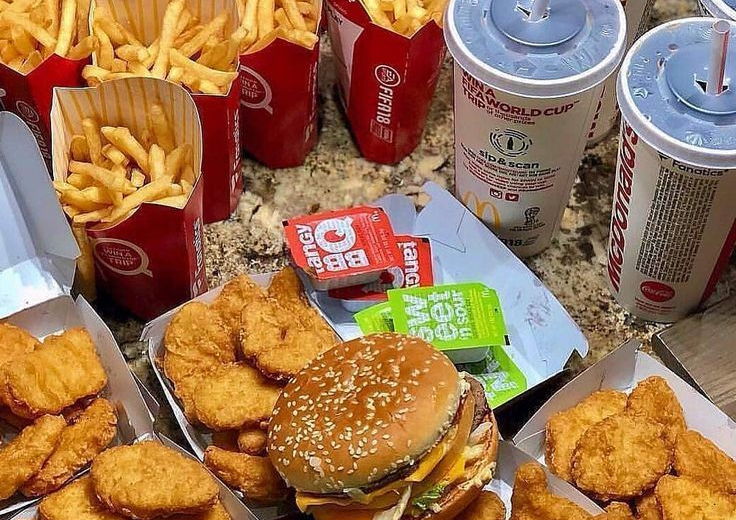
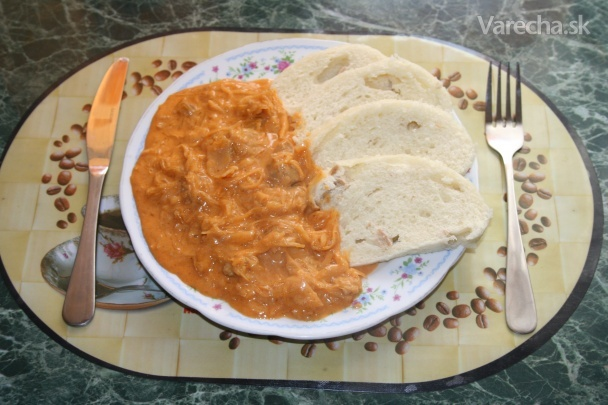
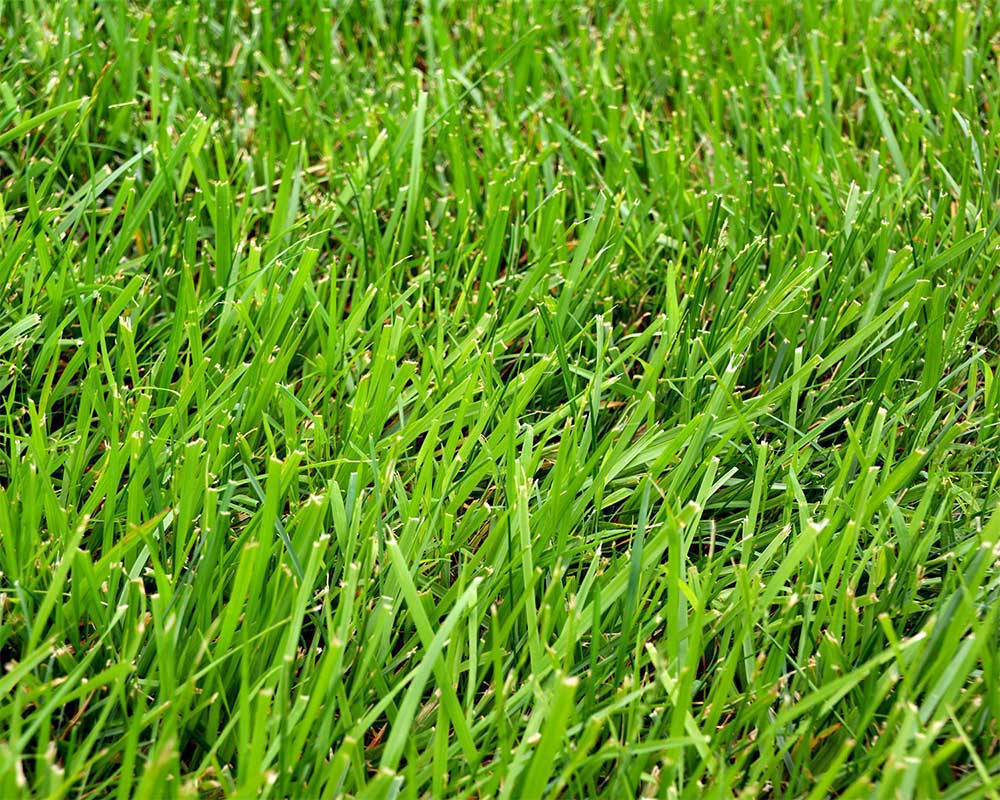
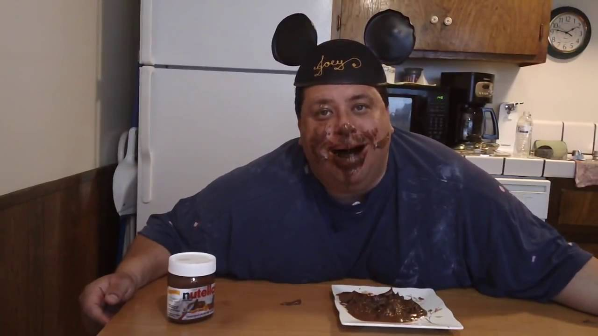

O STRAVE
Michal Gogáň | Článok
Posledných pár rokov sa vo svete zaujímajú ľudia čoraz viac o zdravie. Všetci by chceli zdravo jesť, zdravo vyzerať a to hlavne hneď. V našej nedočkavej spoločnosti si však táto skupina ľudí neuvedomuje, že nič čo chcete, aby vám ostalo, nepríde hneď. Inak povedané, treba byť trpezlivý. O tom však tento článok nie je. Rád by som sa zameral na všetky moderné diéty, povedal niečo o nich, možno kúsok porovnal a odporučil to, čo považujem za najlepšie.
Ako prvú modernú diétu zhrnieme niečo, čo všetci určite poznáme. Je to diéta fast-foodová. Pozostáva prevažne z hocičoho, čo dostať vo food courte vo vami vybranom nákupnom centre. Ak by sme túto diétu mali zanalyzovať z výživového hľadiska, je to viac menej prázdne jedlo. Prázdne v zmysle veľa kalórii a žiadna výživa. Fast-food jedlá sú väčšinou plné tukov a cukru, hlavne preto, aby toho človek chcel jesť viac. Táto diéta je podľa mňa perfektný spôsob, ako si vyvolať diabetes typu 2 v 30-tom roku života(môže vás však prekvapiť aj cievny problém či obezita).

Pozrime sa ďalej na inú diétu, tentoraz nie sebadeštruktívnu. Touto diétou je bežná domáca strava, mysliac tým, čo doma navarí mama/žena/babka. Táto diéta je hneď oveľa zdravšia z nutričného hľadiska, hlavne preto, že hlavným cieľom tejto diéty je to, aby ste sa poriadne najedli a nie, aby ste si jedla kúpili čo najviac. Avšak tiež má svoje nevýhody - nie je vyhovujúca každému. Niekto proste nemá rád to, čo je doma navarené a radšej by jedol niečo iné. Toto je diéta, ktorú uprednostňuje väčšina ľudí.

Posledný príklad diéty na porovnanie je diéta vegánska. Táto diéta naberá v modernom svete rýchlo na popularite, najmä vďaka domnienke, že všetko, čo je vegánske, je zdravé. A veľa podnikov toto patrične využíva. Avšak mnoho vegánov zaznamenáva pozitívne zmeny v rámci cholesterolu, telesnej váhy, či len pocitové. Vegánstvo sa snaží ukázať aké to je zdravé, avšak treba rozlíšiť, či vaša obľúbená vegánska reštaurácia je vegánska z etických alebo zdravotných dôvodov. Lebo etickým vegánom je úplne jedno, čo je s ich telom, len aby zvieratkám nebolo ubližované. V tomto sú porovnateľní s fast-food diétou.

A teraz to, na čo ste všetci tak nedočkavo klepali nohami pod stolom. Ja si o týchto diétach myslím jedno, a to je, že nech každý je to, čo mu vyhovuje. Samozrejme, keby som si mal vybrať, tak si nevyberiem len jednu. Priznám sa, skúšal som vegánsku diétu, avšak po asi štyroch mesiacoch som povolil. Jednak som si uvedomil, že nie je moc zdravé obmedzovať sa len na jednu vec. Ale ja som sa rozhodol zmeniť si stravu na vegánsku, lebo som sa prejedal mäsom a nevedel som prestať. Nakombinoval som si do vegánskej stravy vajíčka, jednak aby som nemusel jesť toľko sóje, ale aj aby som mal variáciu. Kam týmto mierim? Treba si nájsť stravu, ktorá vyhovuje vám. Ak sa necítite zdravo a ste často chorí, odporúčam sa najprv pozrieť na vašu stravu a sledovať, či sa choroba vyrieši. Ak už jete podľa nejakej diéty, porozmýšľajte, či nie ste veľmi obmedzovaní touto diétou. Jediné, čo vám viem povedať ako fakt je, že z fastfood diéty nebudete zdravý.
PS: Boris, prosím ťa, nerob si sáčkovú polievku.

21. septembra 2020